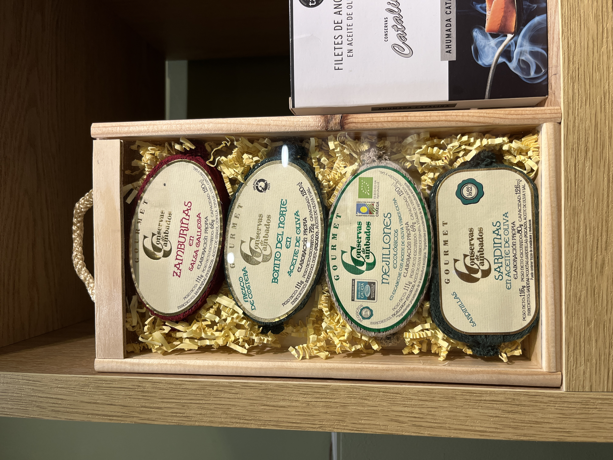
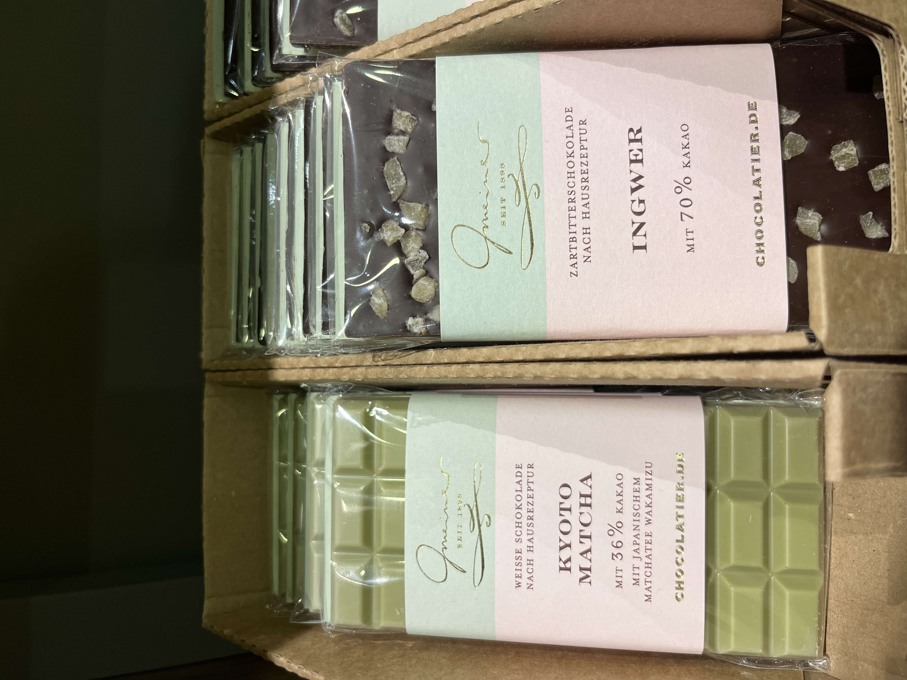
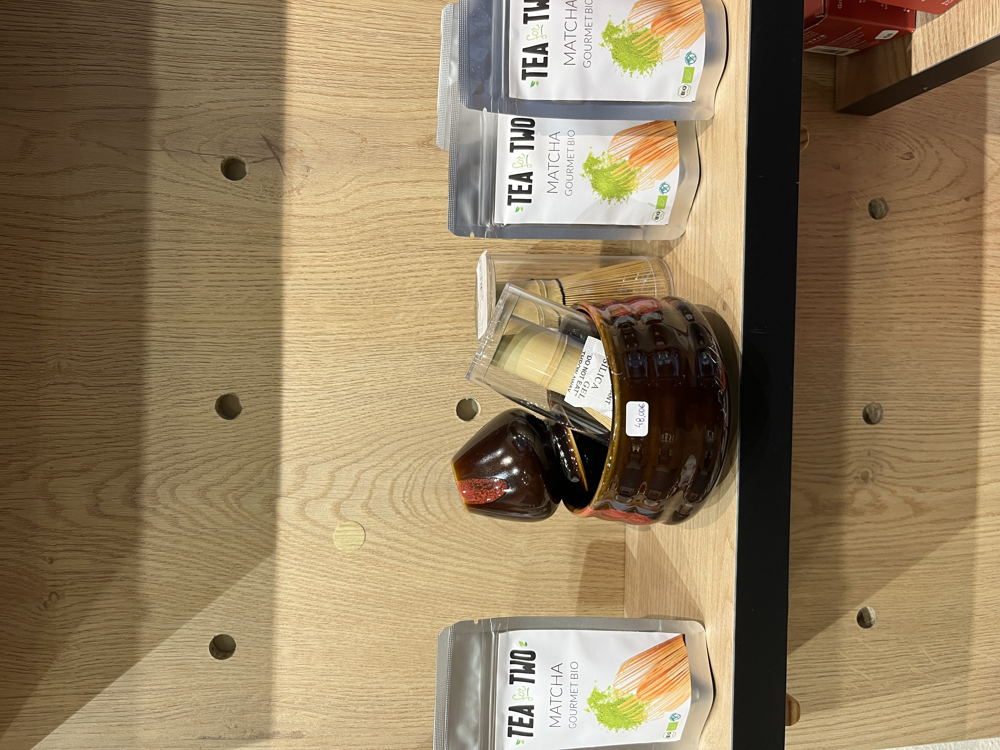

Excelencia en cada detalle
En Sabor Maestro reunimos una colección pensada para quienes disfrutan de lo auténtico. Cada producto ha sido elegido por su origen, su calidad y el cuidado de sus productores artesanos.
Desde aceites de oliva virgen extra hasta panettones artesanales, solo ofrecemos aquello que nos apasiona.

Vinos con personalidad
Proyectos pequeños, bodegas familiares y elaboraciones honestas. Buscamos etiquetas que expresen su terruño y que no se encuentran en los canales habituales.
Vinos elegidos para sorprender y disfrutar en cada copa.

Conservas de Autor
Pescados y mariscos de las rías gallegas y el litoral nacional, transformados con mimo mediante procesos tradicionales.
Sabor, textura y respeto absoluto por la materia prima de temporada.

Chocolates & Bombones
Tabletas bean-to-bar, bombonería fina y cacao de especialidad seleccionado por sus perfiles aromáticos únicos.
Para paladares curiosos que buscan la máxima expresión del cacao bien trabajado.

Tés & Infusiones Premium
Tés de hoja entera y mezclas exclusivas seleccionadas por su pureza y equilibrio. Desde los clásicos más puros hasta combinaciones aromáticas sorprendentes.